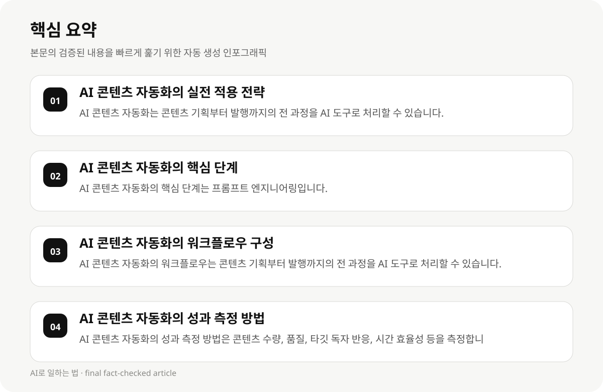

AI 콘텐츠 자동화의 실전 적용 전략 #
2026년 AI 콘텐츠 자동화는 ChatGPT(에이전트형 기획), Claude(긴 본문 작성), Gemini(멀티모달·검색 통합) 3종 조합 워크플로우를 통해 실전 적용 가능한 최고의 콘텐츠 제작 전략입니다. 이 워크플로우는 콘텐츠 기획부터 발행까지의 전 과정을 AI 도구로 효율적으로 처리할 수 있도록 설계되었습니다.
AI 콘텐츠 자동화는 단순한 문장 생성기를 넘어, AI 카피라이팅부터 AI 블로그 자동화까지 폭넓게 활용됩니다. 이는 콘텐츠 제작자의 시간과 에너지를 절약하면서도, 품질이 높은 콘텐츠를 빠르게 생성할 수 있는 기회를 제공합니다.
AI 도구는 타깃 독자와 톤, 길이, 구조까지 세세하게 지정하면 훨씬 완성도 높은 결과를 얻을 수 있습니다. 이는 콘텐츠 제작자가 AI 도구를 선택할 때, 사용 목적, 타깃 독자, 콘텐츠 형식 등을 고려하여 적합한 도구를 선택하는 데 큰 도움이 됩니다.
- AI 콘텐츠 자동화는 콘텐츠 기획부터 발행까지의 전 과정을 AI 도구로 처리할 수 있습니다.
- AI 도구는 타깃 독자, 톤, 길이, 구조 등 세세한 설정을 통해 완성도 높은 결과를 얻을 수 있습니다.
- AI 콘텐츠 자동화는 단순한 문장 생성기를 넘어, AI 카피라이팅부터 AI 블로그 자동화까지 폭넓게 활용됩니다.
AI 콘텐츠 자동화의 핵심 단계 #
AI 콘텐츠 자동화를 실전 적용할 때 가장 중요한 단계는 프롬프트 엔지니어링입니다. 프롬프트는 AI 도구가 생성한 콘텐츠의 품질과 방향성을 결정하는 핵심 요소이기 때문에, 정확하고 세부적인 프롬프트를 설정하는 것이 필수적입니다.
AI 도구를 선택할 때는 콘텐츠 형식, 타깃 독자, 톤, 길이, 구조 등 다양한 요소를 고려해야 합니다. 예를 들어, 블로그 콘텐츠는 길이가 길고 톤이 형식적일 수 있지만, 유튜브 콘텐츠는 짧고 흥미로운 구조이기 때문에 프롬프트 설정이 매우 중요합니다.
AI 콘텐츠 자동화는 체계적인 프로세스가 없으면 시간만 낭비하기 쉽습니다. 따라서 AI 도구를 선택하고 실행할 때, 콘텐츠의 형식, 목적, 타깃 독자 등을 고려하여 프로세스를 체계화하고, 편집 및 검수 단계를 포함하여 완성도 높은 결과를 얻는 것이 중요합니다.
- AI 콘텐츠 자동화의 핵심 단계는 프롬프트 엔지니어링입니다.
- AI 도구를 선택할 때는 콘텐츠 형식, 타깃 독자, 톤, 길이, 구조 등을 고려해야 합니다.
- AI 콘텐츠 자동화는 체계적인 프로세스가 없으면 시간만 낭비하기 쉽습니다.
AI 콘텐츠 자동화의 워크플로우 구성 #
AI 콘텐츠 자동화의 워크플로우는 콘텐츠 기획부터 발행까지의 전 과정을 AI 도구로 처리할 수 있도록 설계되었습니다. 이 워크플로우는 다음과 같은 단계로 구성됩니다:
1. 타깃 독자와 톤, 길이, 구조 설정: AI 도구를 선택할 때, 콘텐츠의 형식, 목적, 타깃 독자, 톤, 길이, 구조 등을 고려하여 프롬프트를 설정합니다.
2. AI 도구 선택 및 설정: 적합한 AI 도구를 선택하고, 콘텐츠 형식, 타깃 독자, 톤, 길이, 구조 등을 기반으로 프롬프트를 설정합니다.
3. 콘텐츠 생성: AI 도구에 프롬프트를 입력하여 콘텐츠를 생성합니다.
4. 편집 및 검수: 생성된 콘텐츠를 편집하고, 품질을 검수합니다.
- AI 콘텐츠 자동화의 워크플로우는 콘텐츠 기획부터 발행까지의 전 과정을 AI 도구로 처리할 수 있습니다.
- AI 도구를 선택할 때는 콘텐츠 형식, 타깃 독자, 톤, 길이, 구조 등을 고려해야 합니다.
- AI 콘텐츠 자동화는 체계적인 프로세스가 없으면 시간만 낭비하기 쉽습니다.

AI 콘텐츠 자동화의 성과 측정 방법 #
AI 콘텐츠 자동화의 성과 측정 방법은 다음과 같습니다:
1. 콘텐츠 수량: 생성된 콘텐츠의 수량을 측정합니다.
2. 콘텐츠 품질: 콘텐츠의 품질을 평가합니다.
3. 타깃 독자 반응: 콘텐츠의 반응을 분석합니다.
4. 시간 효율성: AI 도구를 사용한 콘텐츠 제작 과정의 시간 효율성을 측정합니다.
- AI 콘텐츠 자동화의 성과 측정 방법은 콘텐츠 수량, 품질, 타깃 독자 반응, 시간 효율성 등을 측정합니다.
- AI 콘텐츠 자동화의 성과 측정 방법은 콘텐츠 수량, 품질, 타깃 독자 반응, 시간 효율성을 측정합니다.
AI 콘텐츠 자동화의 도구 선택 기준 #
AI 콘텐츠 자동화의 도구 선택 기준은 다음과 같습니다:
1. 타깃 독자와 톤, 길이, 구조: AI 도구를 선택할 때, 콘텐츠의 형식, 목적, 타깃 독자, 톤, 길이, 구조 등을 고려해야 합니다.
2. AI 도구의 기능: AI 도구는 AI 카피라이팅부터 AI 블로그 자동화까지 다양한 기능을 지원해야 합니다.
3. 시간 효율성: AI 도구를 사용할 때, 콘텐츠 제작 과정의 시간 효율성을 고려해야 합니다.
- AI 콘텐츠 자동화의 도구 선택 기준은 타깃 독자와 톤, 길이, 구조, AI 도구의 기능, 시간 효율성을 고려해야 합니다.
- AI 콘텐츠 자동화의 도구 선택 기준은 타깃 독자와 톤, 길이, 구조, AI 도구의 기능, 시간 효율성을 고려해야 합니다.
AI 콘텐츠 자동화의 실패 사례와 대응 전략 #
AI 콘텐츠 자동화의 실패 사례는 다음과 같습니다:
1. 프롬프트 설정 오류: AI 도구가 생성한 콘텐츠의 품질과 방향성을 결정하는 프롬프트 설정 오류가 발생할 수 있습니다.
2. 타깃 독자와 톤, 길이, 구조 미지정: AI 도구를 사용할 때, 콘텐츠 형식, 목적, 타깃 독자, 톤, 길이, 구조 등을 미지정하면 콘텐츠의 품질이 떨어질 수 있습니다.
3. 시간 낭비: AI 도구를 사용할 때, 체계적인 프로세스가 없으면 시간만 낭비하기 쉽습니다.
- AI 콘텐츠 자동화의 실패 사례는 프롬프트 설정 오류, 타깃 독자와 톤, 길이, 구조 미지정, 시간 낭비 등이 발생할 수 있습니다.
- AI 콘텐츠 자동화의 실패 사례는 프롬프트 설정 오류, 타깃 독자와 톤, 길이, 구조 미지정, 시간 낭비 등이 발생할 수 있습니다.
AI 콘텐츠 자동화의 실무 적용 전략 #
AI 콘텐츠 자동화의 실무 적용 전략은 다음과 같습니다:
1. 타깃 독자와 톤, 길이, 구조 설정: AI 도구를 선택할 때, 콘텐츠 형식, 목적, 타깃 독자, 톤, 길이, 구조 등을 고려하여 프롬프트를 설정합니다.
2. AI 도구 선택 및 설정: 적합한 AI 도구를 선택하고, 콘텐츠 형식, 타깃 독자, 톤, 길이, 구조 등을 기반으로 프롬프트를 설정합니다.
3. 콘텐츠 생성: AI 도구에 프롬프트를 입력하여 콘텐츠를 생성합니다.
4. 편집 및 검수: 생성된 콘텐츠를 편집하고, 품질을 검수합니다.
- AI 콘텐츠 자동화의 실무 적용 전략은 타깃 독자와 톤, 길이, 구조 설정, AI 도구 선택 및 설정, 콘텐츠 생성, 편집 및 검수 단계를 포함합니다.
- AI 콘텐츠 자동화의 실무 적용 전략은 타깃 독자와 톤, 길이, 구조 설정, AI 도구 선택 및 설정, 콘텐츠 생성, 편집 및 검수 단계를 포함합니다.
AI 콘텐츠 자동화의 도구 비교 #
AI 콘텐츠 자동화의 도구 비교는 다음과 같습니다:
1. ChatGPT(에이전트형 기획): AI 기획을 지원하며, 타깃 독자와 톤, 길이, 구조 등을 세부적으로 설정할 수 있습니다.
2. Claude(긴 본문 작성): 긴 본문 콘텐츠를 생성할 수 있으며, AI 도구의 기능을 확장할 수 있습니다.
3. Gemini(멀티모달·검색 통합): 멀티모달 및 검색 통합 기능을 지원하며, 콘텐츠 형식을 확장할 수 있습니다.
- AI 콘텐츠 자동화의 도구 비교는 ChatGPT(에이전트형 기획), Claude(긴 본문 작성), Gemini(멀티모달·검색 통합) 3종 조합을 포함합니다.
- AI 콘텐츠 자동화의 도구 비교는 ChatGPT(에이전트형 기획), Claude(긴 본문 작성), Gemini(멀티모달·검색 통합) 3종 조합을 포함합니다.
AI 콘텐츠 자동화의 저작권 이슈 #
AI 콘텐츠 자동화의 저작권 이슈는 다음과 같습니다:
1. AI 도구의 저작권: AI 도구의 저작권은 일반적으로 구분되지 않으나, 사용 시 저작권을 충분히 보호해야 합니다.
2. 콘텐츠의 저작권: 생성된 콘텐츠의 저작권은 사용자에게 귀속되며, 사용 시 저작권을 충분히 보호해야 합니다.
3. AI 도구의 사용 기준: AI 도구를 사용할 때, 저작권을 충분히 보호하는 데 필요한 조건을 충족해야 합니다.
- AI 콘텐츠 자동화의 저작권 이슈는 AI 도구의 저작권, 콘텐츠의 저작권, AI 도구의 사용 기준 등을 포함합니다.
- AI 콘텐츠 자동화의 저작권 이슈는 AI 도구의 저작권, 콘텐츠의 저작권, AI 도구의 사용 기준 등을 포함합니다.